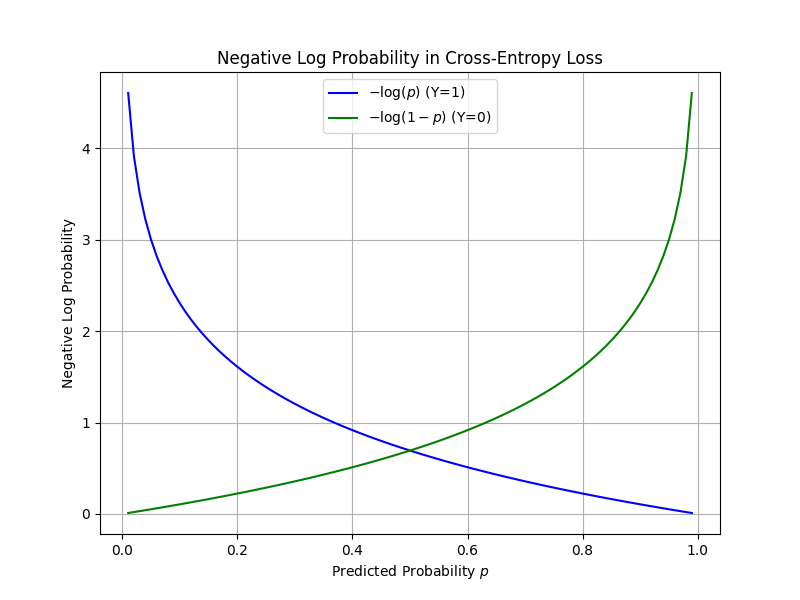
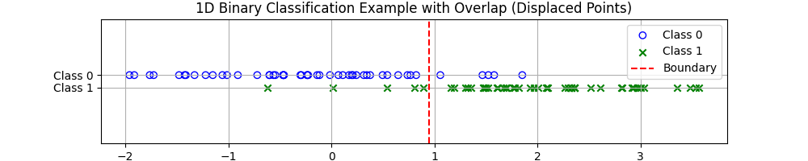
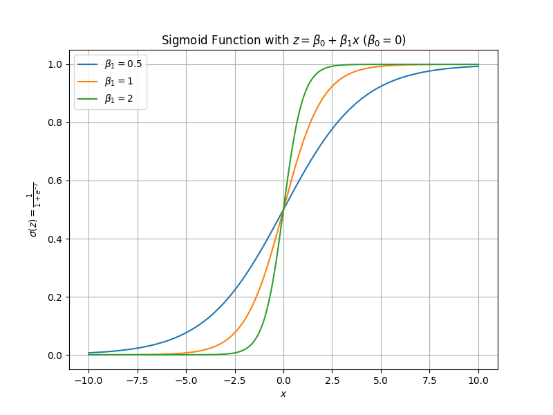
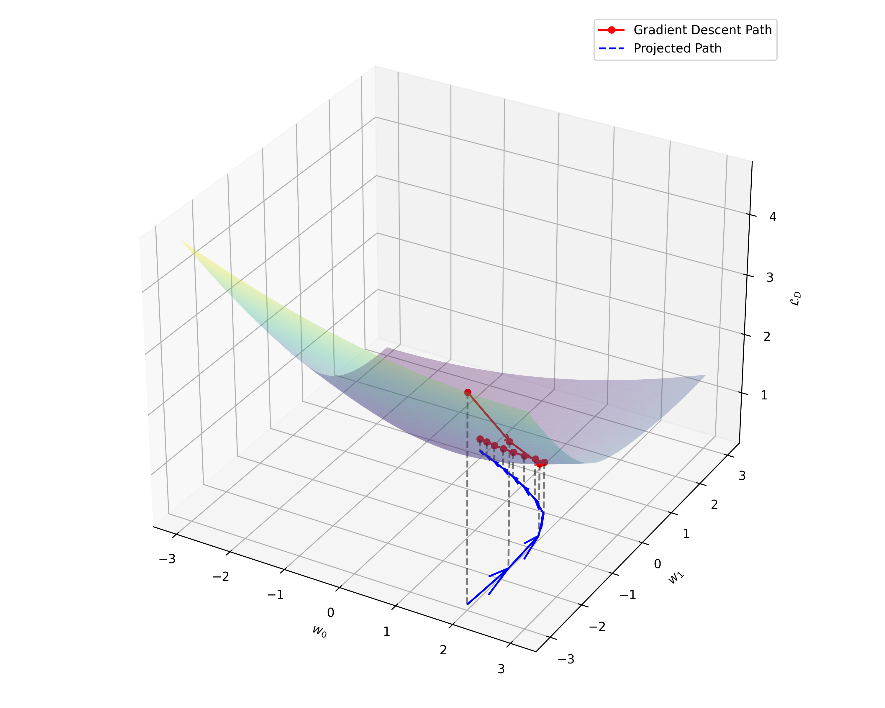
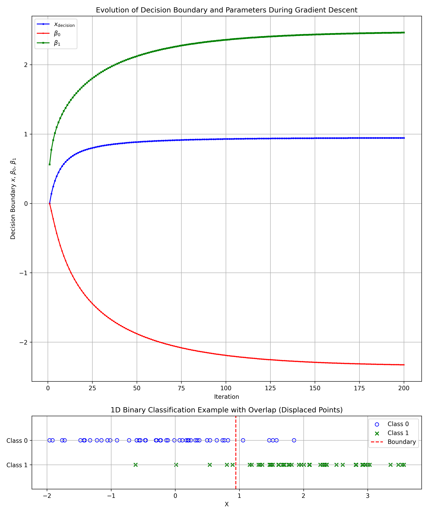

Section 2.2 Binary Classification
Subsection 2.2.1 The Classification Variable \(Y\)
In addition to the regression task discussed in the previous section, we are also interested in classification tasks. In a classification task, \(Y\) is a discrete variable with values are the classes or categories, and the task of the algorithm is to predict a class to which the feature variable \(X\) goes with. In the case of \(k\)-classes, we treat the \(Y\) variable as a collection of \(k\) discrete variables, each taking either \(0\) or \(1\) showing the outcome being that class observed or not. This is the one-hot reprsentation that we have discussed before. We usually, think of te collection as a column vector, which is sometimes typed as a transpose of a row vector.
\begin{equation*}
Y = \begin{bmatrix}
Y_1\\
Y_2\\
Y_3\\
\vdots\\
Y_k
\end{bmatrix} = [Y_1\ Y_2\ \cdots\ Y_k]^T
\end{equation*}
In any observation of the variable \(Y\text{,}\) you find only one of these variables to have a \(1\) and the rest zeros, e.g., if your first observation of \(Y\text{,}\) i.e., \(y^{(1)}\) is a class \(2\text{,}\) then, your \(y^{(1)}\) is represented by the following.
\begin{equation*}
y^{(1)} = \begin{bmatrix}
0\\
1\\
0\\
\vdots\\
0
\end{bmatrix} = [0\ 1\ 0\ \cdots\ 0]^T
\end{equation*}
In the theory of supervised learning given in the last section for continuous \(Y\text{,}\) we now replace the conditional PDF of \((Y \mid X)\) by the corresponding Probability Mass Function (PMF) and the integration by a summation. We will also use \(\hat{Y}\) for the optimal function in place of \(\hat{f}\) to empahsize that it will be also a discrete variables of the same type as \(Y\text{.}\) Thus, Eq. (2.1.1) is replaced by
\begin{equation}
\hat{Y} \equiv \hat{f} = \min\limits_{f}\ \sum_{c=1}^{k}\ \mathcal{L}(Y_c, f(X))\ P(Y_c\mid X).\tag{2.2.1}
\end{equation}
In a binary classification, \(Y\) can take one of the two values: yes/no, true/false, up/down, cat/dog, 0/1, etc. Hence, a binary classification \(Y\) will be a collection of two random \(0/1\) variables.
\begin{equation*}
Y = \begin{bmatrix}
Y_1\\
Y_2\\
\end{bmatrix} = [Y_1\ Y_2]^T
\end{equation*}
In any observation, you will observe one of the two states:
\begin{equation*}
y^{(i)} = \begin{bmatrix}
1\\
0\\
\end{bmatrix} \quad \text{ or }\quad \begin{bmatrix}
0\\
1\\
\end{bmatrix}
\end{equation*}
Although, it is fine to think of observations in this language of vectors. However, for a two state, there is a much simpler way of thinking of the variable \(Y\) - just use the value of class \(1\text{,}\) i.e., \(Y_1\) for \(Y\text{:}\)
\begin{equation*}
Y = \begin{cases}
1 \amp \text{ if state } \begin{bmatrix}
1\\
0\\
\end{bmatrix},\\
0 \amp \text{ if state } \begin{bmatrix}
0\\
1\\
\end{bmatrix}.
\end{cases}
\end{equation*}
This makes algebra simpler since, now \(Y\) is just a scaler with two values, \(0\) and \(1\text{.}\)
Subsection 2.2.2 Binary Classification with Scalar \(X\)
In this setup, we have a scalar variable \(X\) (a single real-valued feature) and a binary response variable \(Y\) that takes two values, typically \(Y \in \{0, 1\}\text{,}\) representing two classes. The goal is binary classification: given a value of \(X\text{,}\) predict the class label \(Y\text{.}\)
Predicting Probability
Since, predicted \(y\) is either zero or \(1\text{,}\) it is natural to predict probability that \(Y=1\) for a given X. That is the function that we seek will be probability of event \(Y=1\) when \(X\) has a particular value, \(X=x^{(i)}\text{.}\)
\begin{equation}
f(x^{(i)}) = P(Y=1\mid X=x^{(i)})\tag{2.2.2}
\end{equation}
Note that if we know the conditional probability mass function, then this function has a definite value for each value of \(X\text{.}\) We can write it more generally without specifying \(X\) as
\begin{equation*}
f(X) = P(Y=1\mid X).
\end{equation*}
The Loss Function
Since we trying to predict conditional probability of \(Y=1\) given an \(X\text{,}\) if actual value was \(y=1\text{,}\) then from a loss function we expect that it be small when predicted probability is closer to \(1\) than if it closer to zero. Negative log of probability captures this aspect well as shown in Figure 2.2.1. Thus, we expect the loss function to have the following form.
\begin{equation*}
\mathcal{L}(Y, f(X)) = \begin{cases}
-\log P_\theta(Y=1 \mid X) \amp \text{ if }\ \ Y = 1\\
-\log \left( 1 - P_\theta(Y=1 \mid X) \right) \amp \text{ if }\ \ Y = 0
\end{cases}
\end{equation*}
We can combine these two expressions into one.
\begin{equation*}
\mathcal{L}(Y, f(X)) = - \left[ Y\, \log P_\theta(Y=1 \mid X) + (1-Y)\, \log \left( 1 - P_\theta(Y=1 \mid X) \right) \right]
\end{equation*}

The optimal value of parameters will be obtained when we minimize it’s expectation value using the dataset. Recall that the data consists of pairs \(\mathcal{D} = (x^{(i)}, y^{(i)})\) for \(i = 1, \dots, n\text{,}\) where the \(x^{(i)}\) are points on the real line since we have a scalar \(X\text{,}\) and \(y^{(i)}\) indicates the class, which is either \(1\) or \(0\text{.}\) Weighing each datapoint equally by a factt \(1/n\) gives us the following expectation, to be denoted by \(\mathcal{L}_D\text{,}\)
\begin{equation}
\mathcal{L}_D= - \frac{1}{n}\sum_{i=1}^{n} \left[ y^{(i)}\log p_\theta^{(i)} + (1-y^{(i)}) ( 1 - \log p_\theta^{(i)}) \right],\tag{2.2.3}
\end{equation}
where
\begin{equation*}
p_\theta^{(i)} = P_\theta(y^{(i)}= 1 \mid X=x^{(i)}).
\end{equation*}
The expected loss in Eq. (2.2.3) is called Binary Cross Entropy. As before, we get the optimum value of the parameter(s) \(\theta\) by solving the following extremum finding equation.
\begin{equation}
\frac{\partial \mathcal{L}_D}{\partial \theta} = 0,\tag{2.2.4}
\end{equation}
one for each \(\theta\text{.}\) We have already shown how it is dome in the case of linear regression. Now, in the following we will discuss a linear model for classification that is called the logistic regression.
The Logistic Regression Model
Now, we will specify statistical model for \(P_\theta(Y=1, X)\) that is used in a common algoritm called Logistic Regression. Logistic regression here will try to find the best separation point on the \(X\) axis that will minimize the net error on the dataset \(\mathcal{D}\) even though the data for some values of \(X\) are not so clear since there are datapoints that correspond to both classes as shown in Figure 2.2.2 .

If \(X\) consisted of two variables, say \((X_1, X_2)\text{,}\) then it will find a straight line in the \((X_1, X_2)\) plane that is the decision line that minimizes the error. For higher dimensional situations, logistic regression predicts the decision planes and hyperplanes that minizations of error. These decision point/planes are not perfect if no linear boundary can separate the points in the dataset. That is, we will never get a zero error on \(\mathcal{D}\) in these cases.
In logistic regression we models the probability by a sigmoid function of a linear combination of a constant and a linear function of \(X\text{:}\)
\begin{equation}
P_\theta(Y=1 \mid X=x) = \sigma(\beta_0 + \beta_1 x),\tag{2.2.5}
\end{equation}
where sigmoid function, writing (\(z = \beta_0 + \beta_1 x\))
\begin{equation}
\sigma(z) = \frac{e^{z}}{1 + e^{z}} = \frac{1}{1 + e^{-z}}\tag{2.2.6}
\end{equation}
The range for \(z\) is from \(-\infty\) to \(+\infty\text{.}\) A plot of sigmoid versus the original variable for different choices of the “scale (or slope)” parameter \(\beta_1\) is shown in Figure 2.2.3. You can see that sigmoid function’s output is restricted to the range \((0,1)\) suporting it’s use as a probability.
An usefu fact about sigmoid is about its derivative, which can be written in terms of sigmoid itself as you can verify by explictily doing it.
\begin{equation}
\frac{d\sigma(z)}{dz} = \sigma(1-\sigma).\tag{2.2.7}
\end{equation}

The decision boundary depends on the choice of the threshold. For instance, if we choose \(p_\text{th} = 0.5\text{,}\) then we will classify into two \(Y\) classes as follows.
\begin{equation*}
\text{If } P_\theta(Y=1 \mid X=x) \gt 0.5,\ \ \text{then } Y = 1,\ \ \text{else} \ \ Y = 0.
\end{equation*}
This translates into the following decision for the \(X\) value:
\begin{align*}
\amp \frac{1}{1 + e^{-z}} = 0.5 = \frac{1}{2}\\
\amp \quad \implies 1 + e^{-z} = 2,\implies e^{-z} = 1 \implies z = 0 \\
\amp \quad \implies \beta_0 + \beta_1 x = 0 \implies x_\text{decision} = -\beta_0 / \beta_1.
\end{align*}
Thereofore, the decision point on the \(X\)-axis for a scalar \(X\) using the optimal values of the parameters will be
\begin{equation}
x_\text{decision} = -\hat{\beta}_0 / \hat{\beta}_1.\tag{2.2.8}
\end{equation}
That is, we predict \(Y=1\) if \(X \gt x_\text{decision}\) and \(Y=0\) otherwise.
Estimating Optimal Parameters From The Data
Eq. (2.2.8) has boiled the task of classification of a new data \(x^{n+1}\) to comparing it to the optimal \(\hat{\beta}_0 / \hat{\beta}_1\text{.}\) The optimal \(\beta_0\) and \(\beta_1\) are the values of these parameters that minimize the loss function \(\mathcal{L}_D\) in Eq. (2.2.3). Writing the loss function using the logistic regression model’s probability function \(\sigma(\beta_0 + \beta_1\, X)\text{.}\) With \(z^{(i)}\) for \(\beta_0 + \beta_1\, x^{(i)}\text{,}\) will have
\begin{equation}
\mathcal{L}_D = - \frac{1}{n} \sum_{i=1}^n\, \left[ y^{(i)} \log \sigma(z^{(i)})
+ (1 - y^{(i)}) (1 - \log \sigma(z^{(i)}) )
\right]\tag{2.2.9}
\end{equation}
To find it’s extremum point in the plane of parameters \((\beta_0, \beta_1 )\text{,}\) in principle, we just need to solve the following for \(\beta_0\) and \(\beta_1\text{.}\) For simpler notation, let’s write \(\sigma^{(i)}\) for \(\sigma(z^{(i)})\text{.}\)
\begin{align}
\amp \frac{\partial \mathcal{L}_D}{\partial \beta_0} = - \frac{1}{n} \sum_{i=1}^n\, \left[
\frac{ y^{(i)} } { \sigma^{(i)} } - \frac{ 1 - y^{(i)} }{ 1 - \sigma^{(i)} } \right]\,\frac{\partial \sigma^{(i)}}{\partial z^{(i)}}\,\frac{\partial z^{(i)}}{\partial \beta_0} = 0 \tag{2.2.10}\\
\amp \frac{\partial \mathcal{L}_D}{\partial \beta_1} = - \frac{1}{n} \sum_{i=1}^n\, \left[
\frac{ y^{(i)} } { \sigma^{(i)} } - \frac{ 1 - y^{(i)} }{ 1 - \sigma^{(i)} } \right]\,\frac{\partial \sigma^{(i)}}{\partial z^{(i)}}\,\frac{\partial z^{(i)}}{\partial \beta_1} = 0 \tag{2.2.11}
\end{align}
With
\begin{align*}
\amp \frac{\partial z^{(i)}}{\partial \beta_0} = \frac{\partial (\beta_0 + \beta_1\,x^{(i)})}{\partial \beta_0} = 1.\\
\amp \frac{\partial z^{(i)}}{\partial \beta_1} = \frac{\partial (\beta_0 + \beta_1\,x^{(i)})}{\partial \beta_1} = x^{(i)}.
\end{align*}
Unlike what happened in the case of linear regression, it’s not possible to solve these equations analytically. Among several numerical algorithms, gradient descent method is the most commonly used method.
Subsection 2.2.3 Gradient Descent for Logistic Regression
To minimize the cross-entropy loss \(\mathcal{L}_D\) defined in (2.2.9), we use the gradient descent algorithm, as the partial derivatives (2.2.10) and (2.2.11) cannot be solved analytically. Gradient descent iteratively updates the parameters \(\beta_0\) and \(\beta_1\) to reduce \(\mathcal{L}_D\) by moving in the direction of the negative gradient. The amount of update to apply in each iteration is controlled by the learning rate parameter \(\alpha\text{.}\)
The update rule for each parameter is:
\begin{equation*}
\beta_j \gets \beta_j - \alpha \frac{\partial \mathcal{L}_D}{\partial \beta_j}, \quad j \in \{0, 1\},
\end{equation*}
where \(\alpha\) is the learning rate, a positive scalar controlling the step size. Using the sigmoid function’s derivative, \(\frac{\partial \sigma^{(i)}}{\partial z^{(i)}} = \sigma^{(i)}(1 - \sigma^{(i)})\text{,}\) where \(z^{(i)} = \beta_0 + \beta_1 x^{(i)}\text{,}\) and noting that \(\frac{\partial z^{(i)}}{\partial \beta_0} = 1\) and \(\frac{\partial z^{(i)}}{\partial \beta_1} = x^{(i)}\text{,}\) the gradients are:
\begin{align*}
\amp \frac{\partial \mathcal{L}_D}{\partial \beta_0} = \frac{1}{n} \sum_{i=1}^n (\sigma^{(i)} - y^{(i)}), \\
\amp \frac{\partial \mathcal{L}_D}{\partial \beta_1} = \frac{1}{n} \sum_{i=1}^n (\sigma^{(i)} - y^{(i)}) x^{(i)},
\end{align*}
where \(\sigma^{(i)} = \sigma(\beta_0 + \beta_1 x^{(i)})\text{.}\)
Starting from an initial guess for \((\beta_0, \beta_1)\text{,}\) gradient descent iteratively applies these updates until \(\mathcal{L}_D\) converges to a minimum or a maximum number of iterations is reached. The process can be visualized in the \((\beta_0, \beta_1)\) plane, where the loss \(\mathcal{L}_D\) forms a surface, and each update moves the parameters along the negative gradient toward the minimum. This is illustrated in Figure 2.2.4.

Following program shows the python code for the simulation that find the optimal values of \(\hat{\beta}_0\) and \(\hat{\beta}_1\) by gradient descent method. To produce larger arrow for the figure I used a large learning rate, which is named alpha in the program. For a fast and yet reliable convergence, learning rate has to be chosen carefully. Often, one needs to do experimentation to find an effective learning rate for the problem at han.
import numpy as np
import matplotlib.pyplot as plt
from mpl_toolkits.mplot3d import Axes3D
# Generate synthetic data
np.random.seed(42)
n = 50
X = np.concatenate([np.random.normal(0, 1, n), np.random.normal(2, 1, n)])
Y = np.concatenate([np.zeros(n), np.ones(n)])
# Sigmoid function
def sigmoid(z):
return 1 / (1 + np.exp(-z))
# Compute loss
def compute_loss(beta0, beta1, X, Y):
z = beta0 + beta1 * X
sigma = sigmoid(z)
loss = -(1/len(X)) * np.sum(Y * np.log(sigma + 1e-10) +
(1 - Y) * np.log(1 - sigma + 1e-10))#small values to prevent log of zero.
return loss
# Compute gradients
def compute_gradients(beta0, beta1, X, Y):
z = beta0 + beta1 * X
sigma = sigmoid(z)
grad_beta0 = (1/len(X)) * np.sum(sigma - Y)
grad_beta1 = (1/len(X)) * np.sum((sigma - Y) * X)
return grad_beta0, grad_beta1
# Gradient descent
alpha = 1.0
num_iterations = 10
beta0, beta1 = 2.0, -3.0 # Initial guess
path = [(beta0, beta1)]
for _ in range(num_iterations):
grad_beta0, grad_beta1 = compute_gradients(beta0, beta1, X, Y)
beta0 -= alpha * grad_beta0
beta1 -= alpha * grad_beta1
path.append((beta0, beta1))
# Create mesh for loss surface
beta0_range = np.linspace(-3, 3, 50)
beta1_range = np.linspace(-3, 3, 50)
B0, B1 = np.meshgrid(beta0_range, beta1_range)
Loss = np.array([[compute_loss(b0, b1, X, Y) for b0 in beta0_range]\\
for b1 in beta1_range])
# Plot
fig = plt.figure(figsize=(10, 8))
ax = fig.add_subplot(111, projection='3d')
ax.plot_surface(B0, B1, Loss, cmap='viridis', alpha=0.3)
path = np.array(path)
loss_path = [compute_loss(b0, b1, X, Y) for b0, b1 in path]
ax.plot(path[:, 0], path[:, 1], loss_path,
'r.-', label='Gradient Descent Path', markersize=10)
for i in range(len(path)-1):
ax.quiver(path[i, 0], path[i, 1], loss_path[i],
path[i+1, 0] - path[i, 0], path[i+1, 1] - path[i, 1],
loss_path[i+1] - loss_path[i],
color='red', arrow_length_ratio=0.1)
# Add projection onto the (beta_0, beta_1) plane
z_min = np.min(Loss) - 0.05 # Slightly below min for visibility
ax.plot(path[:, 0], path[:, 1], z_min * np.ones_like(path[:, 0]),
'b--', label='Projected Path')
for i in range(len(path)-1):
ax.quiver(path[i, 0], path[i, 1], z_min,
path[i+1, 0] - path[i, 0], path[i+1, 1] - path[i, 1], 0,
color='blue', arrow_length_ratio=0.5)
# Add vertical lines from path to projection
for i in range(len(path)):
ax.plot([path[i, 0], path[i, 0]], [path[i, 1], path[i, 1]],
[loss_path[i], z_min], 'k--', alpha=0.5)
ax.set_xlabel(r'$\beta_0$')
ax.set_ylabel(r'$\beta_1$')
ax.set_zlabel(r'$\mathcal{L}_D$')
ax.set_title('Gradient Descent on Loss Surface with Projected Path')
ax.legend()
plt.tight_layout()
plt.savefig('gradient_descent_projected.png', dpi=300)
plt.show()
A logistic regression solution of a binary classificaiton problem is shown in Figure 2.2.5. The top plot shows how the parameters and the resulting decision boundary in the \(X\)-space changes as we train the parameters. With sufficcient iterations of the algorithm, the values stabilize, corresponding to the minimum of the error discovered by the gradient descenct method. Since the data for the two classes have considerable overlap, no value of \(X\) can separate the two classes.

import numpy as np
import matplotlib.pyplot as plt
import matplotlib.gridspec as gridspec
# Generate the data
np.random.seed(42)
n = 50
X0 = np.random.normal(0, 1, n)
X1 = np.random.normal(2, 1, n)
X = np.concatenate([X0, X1])
Y = np.concatenate([np.zeros(n), np.ones(n)])
# Define the sigmoid function
def sigmoid(z):
return 1 / (1 + np.exp(-z))
# Compute gradients
def compute_gradients(beta0, beta1, X, Y):
z = beta0 + beta1 * X
sigma = sigmoid(z)
grad_beta0 = (1 / len(X)) * np.sum(sigma - Y)
grad_beta1 = (1 / len(X)) * np.sum((sigma - Y) * X)
return grad_beta0, grad_beta1
# Gradient descent parameters
alpha = 1.0 # Learning rate
num_iterations = 200 # Number of iterations
beta0 = 0.0 # Initial beta_0
beta1 = 0.0 # Initial beta_1
# Lists to store decision boundaries and parameters
boundaries = []
beta0_vals = []
beta1_vals = []
iterations_list = []
# Run gradient descent
for iteration in range(1, num_iterations + 1):
grad_beta0, grad_beta1 = compute_gradients(beta0, beta1, X, Y)
beta0 -= alpha * grad_beta0
beta1 -= alpha * grad_beta1
# Compute decision boundary if beta1 is not zero
if abs(beta1) > 1e-10:
boundary = -beta0 / beta1
beta0_vals.append(beta0)
beta1_vals.append(beta1)
boundaries.append(boundary)
iterations_list.append(iteration)
# Print final values
print(f"Final beta_0: {beta0:.2f}")
print(f"Final beta_1: {beta1:.2f}")
print(f"Final decision boundary: {boundaries[-1]:.2f}")
# Create figure with GridSpec for different subplot sizes
fig = plt.figure(figsize=(10, 12)) # Overall figure size
gs = gridspec.GridSpec(2, 1, height_ratios=[5, 1]) # Top plot taller, bottom plot shorter
# Top subplot: Evolution of decision boundary and parameters
ax1 = fig.add_subplot(gs[0])
ax1.plot(iterations_list, boundaries, marker='o', markersize=2,
linestyle='-', color='blue', label=r'$x_{\text{decision}}$')
ax1.plot(iterations_list, beta0_vals, marker='x', markersize=2,
linestyle='-', color='red', label=r'$\beta_0$')
ax1.plot(iterations_list, beta1_vals, marker='s', markersize=2,
linestyle='-', color='green', label=r'$\beta_1$')
ax1.set_xlabel('Iteration')
ax1.set_ylabel(r'Decision Boundary $x$, $\beta_0$, $\beta_1$')
ax1.set_title('Evolution of Decision Boundary and Parameters During Gradient Descent')
ax1.grid(True)
ax1.legend()
# Bottom subplot: 1D data with decision boundary
ax2 = fig.add_subplot(gs[1])
ax2.scatter(X[Y==0], np.full(n, 0.1), marker='o', facecolors='none',
edgecolors='blue', label='Class 0')
ax2.scatter(X[Y==1], np.full(n, -0.1), marker='x', color='green', label='Class 1')
ax2.axvline(boundaries[-1], color='red', linestyle='--', label='Boundary')
ax2.set_xlabel('X')
ax2.set_ylim(-0.3, 0.3)
ax2.set_yticks([-0.1, 0.1])
ax2.set_yticklabels(['Class 1', 'Class 0'])
ax2.set_title('1D Binary Classification Example with Overlap (Displaced Points)')
ax2.grid(True)
ax2.legend()
# Adjust layout to prevent overlap
plt.tight_layout()
plt.show()